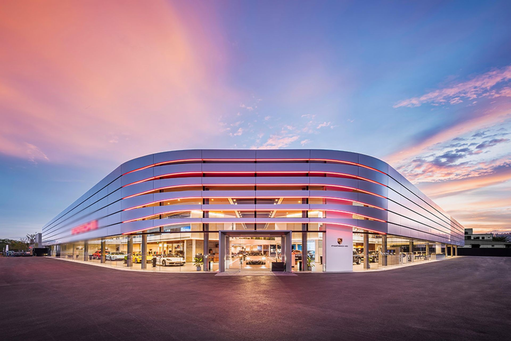
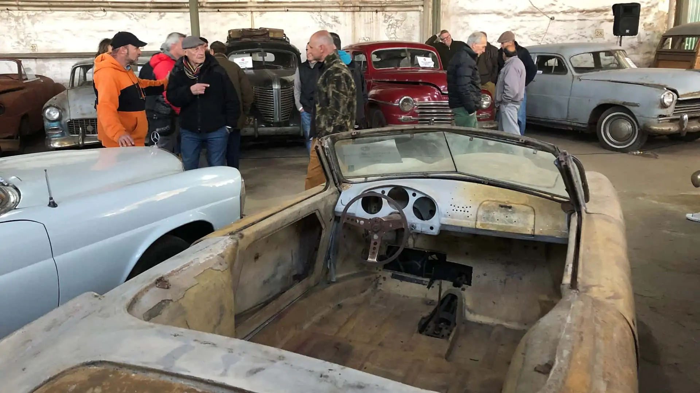
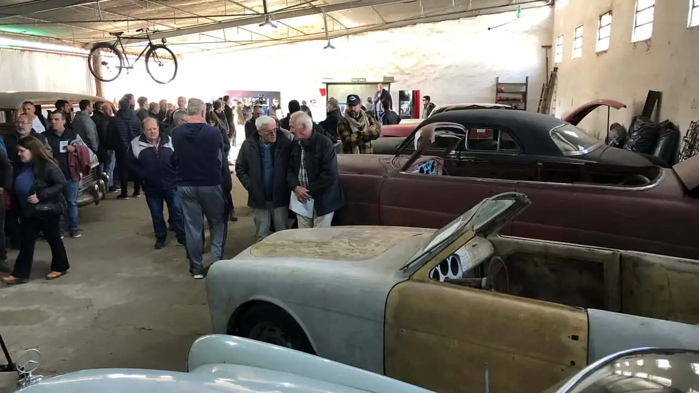
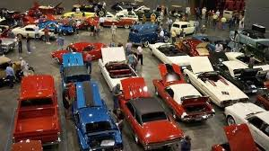

Somos una concesionaria especializada en la venta de vehículos nuevos y usados. Nuestro compromiso es ofrecer a nuestros clientes una amplia gama de opciones de automóviles y brindar un servicio de alta calidad.
En Classy Cars, no solo vendemos vehículos, sino que también ofrecemos servicios de mantenimiento y reparación de automóviles, piezas de repuesto originales y financiamiento a medida para que pueda llevarse el vehículo de sus sueños.
Nuestro equipo de expertos está aquí para ayudarte a encontrar el automóvil perfecto que se adapte a tus necesidades y presupuesto. Ya sea que estés buscando un coche nuevo, un vehículo familiar o una opción más económica, ¡estamos aquí para ayudarte a tomar la decisión correcta!
En la década de 1980, un apasionado entusiasta de los automóviles clásicos llamado Daniel Rodríguez decidió seguir su pasión y fundó "Classy Cars" en el corazón de la histórica ciudad de Buenos Aires. Su amor por los autos antiguos lo llevó a iniciar esta concesionaria especializada en vehículos vintage y clásicos. Al principio, la concesionaria era pequeña y contaba con solo unos pocos automóviles clásicos restaurados que Daniel había adquirido y restaurado personalmente.
Con el tiempo, "Classy Cars" ganó una reputación por la calidad y autenticidad de sus vehículos clásicos. La concesionaria comenzó a crecer y adquirió un taller de restauración especializado en la restauración de autos antiguos. Esto permitió que la concesionaria no solo vendiera autos clásicos, sino que también los restaurara a su antigua gloria. Durante esta década, Daniel y su equipo comenzaron a importar autos clásicos de todo el mundo, lo que expandió su selección y atrajo a coleccionistas y aficionados de todo el país.
Con la llegada de Internet, dio el salto al mundo digital. Crearon un sitio web que permitía a los amantes de los autos clásicos de todo el país ver su inventario y hacer compras en línea. Esto llevó a un aumento significativo en las ventas y la concesionaria se convirtió en un nombre reconocido en la comunidad de coleccionistas de autos. Además, organizaron eventos anuales de autos clásicos en Buenos Aires que atrajeron a entusiastas de todo el país. Hoy en día se ha convertido en un emblema de la pasión por los autos clásicos. Daniel Rodríguez, aunque retirado, sigue siendo una figura influyente en la comunidad de autos clásicos y su legado perdura a través de la concesionaria. Siguen ofreciendo una amplia gama de vehículos antiguos, desde elegantes autos de la década de 1930 hasta icónicos muscle cars de la década de 1970. La concesionaria continúa atrayendo a coleccionistas, entusiastas y amantes de la historia automovilística de todo el mundo. Su compromiso con la autenticidad y la calidad ha hecho que "Classy Cars" sea un destino único para aquellos que buscan poseer una parte de la historia del automóvil.
  Pasión por los Autos Clásicos: La pasión por los automóviles clásicos debe ser el valor central de la concesionaria. El amor por la historia y la estética de los autos antiguos debe ser evidente en todas las interacciones con clientes y en la selección de vehículos.
La honestidad y la transparencia en todas las transacciones son esenciales. Los clientes deben sentirse seguros de que están adquiriendo un automóvil con un historial claro y una descripción precisa.
Brindar un servicio excepcional al cliente es crucial. Esto incluye asesorar a los clientes en la selección de vehículos, proporcionar información completa sobre la historia de los autos y ofrecer un servicio postventa de alta calidad.
Classy Cars cuenta con un equipo apasionado y altamente capacitado de entusiastas de los autos clásicos. Nuestros expertos en ventas, mecánicos y restauradores comparten una profunda pasión por la historia automotriz y se dedican a brindar un servicio excepcional a nuestros clientes. Cada miembro de nuestro equipo está comprometido con la autenticidad, la calidad y la satisfacción del cliente.
Daniel Rodríguez (hombre de camisa celeste), el fundador de la concesionaria, es un apasionado amante de los autos clásicos desde joven. Su visión y dedicación han sido fundamentales para establecer "Classy Cars" como un referente en el mundo de los autos vintage. Su profundo conocimiento y experiencia en la restauración de autos clásicos son incomparables, y su pasión por cada vehículo es evidente en cada detalle. Daniel sigue siendo una figura respetada en la comunidad de autos clásicos y su influencia es fundamental para mantener los estándares de calidad y autenticidad en la concesionaria.
Pedro García es nuestra experimentada especialista en ventas. Con más de una década de experiencia en la industria, Pedro es conocida por su capacidad para comprender las necesidades y deseos de nuestros clientes. Su enfoque personalizado y su profundo conocimiento de la historia de los autos clásicos hacen que cada compra sea una experiencia emocionante y educativa. María se enorgullece de ayudar a los clientes a encontrar el automóvil clásico perfecto que se adapte a sus gustos y presupuesto.
Luis Martínez y Jeronimo Diaz son nuestros maestros restauradores y encargados del taller de restauración. Con décadas de experiencia en la restauración de autos clásicos, Luis y Jero son unos artista en la preservación de la belleza y autenticidad de estos vehículos. Su atención meticulosa a los detalles, su habilidad en la artesanía automotriz y su amor por la historia de los autos son evidentes en cada proyecto que llevan a cabo. Trabajan incansablemente para devolver a la vida automóviles antiguos, garantizando que cada uno de nuestros autos clásicos sea una obra maestra de la restauración.